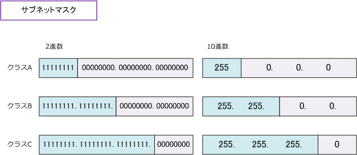
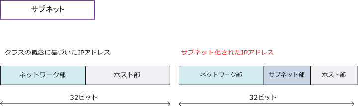
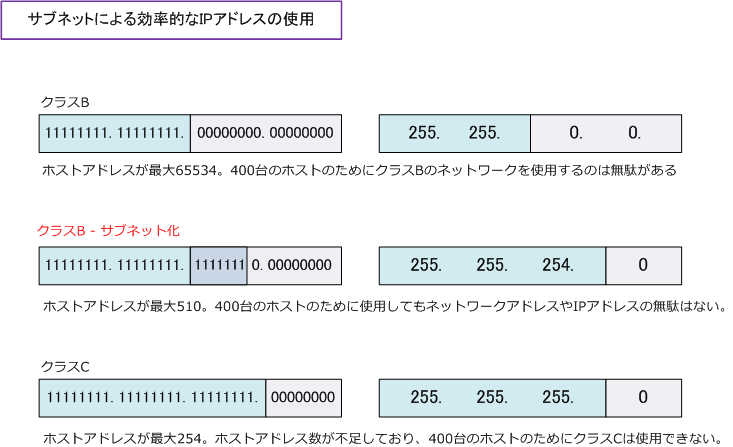
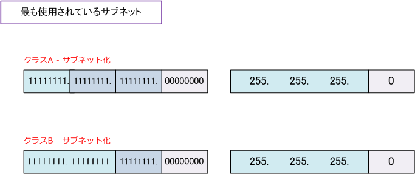

IP address - subnetmask
IPアドレス - サブネットマスク
IPアドレスのクラスが分かれば、ネットワーク部が何ビットであるのか分かります。クラスAでは「8bit」 クラスBでは「16bit」クラスCでは「24bit」がネットワーク部です。この情報をもとにネットワーク部の 示す範囲は以下の通り。ビット「1」がネットワークアドレス、ビット「0」がホストアドレスを示す範囲。

例えば「192.168.1.1」はクラスCのIPアドレスであるから、サブネットマスクが「255.255.255.0」である ことが分かります。このようにサブネットマスクは、IPアドレスの32ビットのうち何ビットをネットワーク アドレスに使うのかを定義するための32ビットの数値のことです。サブネットマスクには、2つの表記方法が あります。今回の場合、1つは「192.168.1.0/24」もう1つは「192.168.1.0 255.255.255.0」となります。
IPアドレス - サブネット
サブネットは、クラスA、B、Cのネットワークを複数の小さなネットワークに分割したネットワークのこと。 IPアドレスを構成するネットワーク部とホスト部のうち、ホスト部のビットをサブネット部として使用する ことにより、ホスト部のビットをどれだけサブネット部として使用するのかは、NW管理者で自由に決めます。

例えば、1つのネットワークに400台のホストを接続したいとします。クラスCでは1つのネットワークに 最大「254台」までのホストしか接続できないので、クラスBのネットワークを採用する必要があります。 しかしクラスBの場合、1つのネットワークに最大 65534 のホストを接続できますが、400台のホストを 接続するのにクラスBのアドレスを使用するのはかなりIPアドレスの無駄です。そこでサブネットの出番。

今回の場合、先ずクラスCでは要件を満たせないのでクラスBを使用します。次に、クラスBの場合、1つの ネットワークが大きいのでサブネット化をします。ホスト部が 8 ビットである場合、28 により 256 です。 ホスト部が 9 ビットである場合 29 により512です。ネットワークアドレスとブロードキャストアドレスを 差し引いて（-2）、ホスト部が9ビットなら最大「510台」のホストを接続できますし、無駄もありません。9
現在の日本国内の社内ネットワークなどで最も使用されているサブネット化は、クラスAまたはクラスBの ネットワークで「ホスト部を 8 ビットだけにする」というパターンです。つまり、1つのネットワークに 最大254台のホスト数が、ブロードキャストの分割、IPアドレス計画、ルーティング設計、セキュリティの 観点から最も都合が良いからです。また、クラスCではネットワークアドレス数が最大 256 と拡張性がない ことから大企業でのクラスC採用は少なく、またクラスCのサブネット化についてもあまりないのが実情です。
